Префектура Оита · Кудзю, Такэта, Беппу · дорога и отдых
Плато Кудзю и Каннава: дорога Яманами, барабаны под небом и пар над Беппу
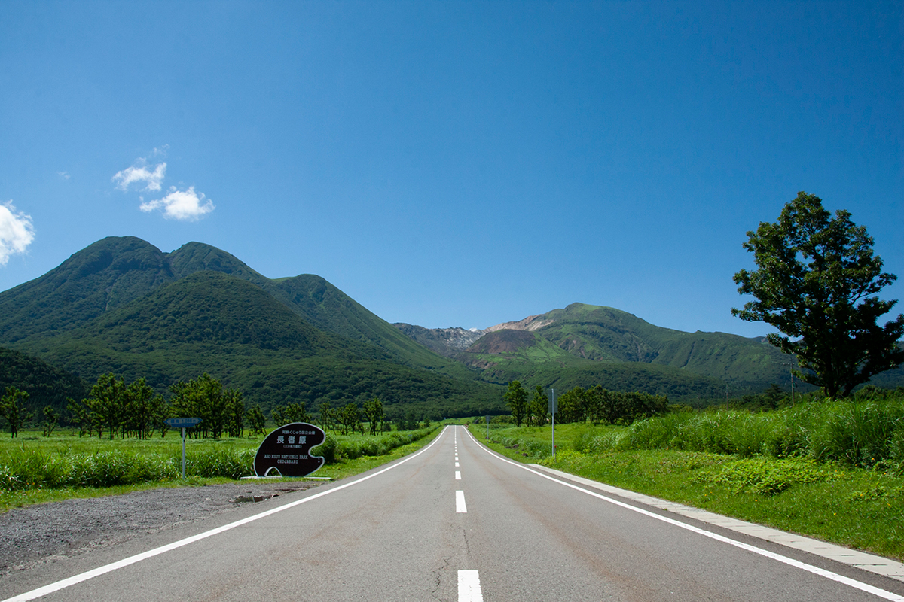
Через самую высокую часть Кюсю идёт дорога Яманами, с которой открываются горы Кудзю. На плато под этими горами бьют в барабаны под открытым небом, ночуют в шатрах среди цветов и пьют местное вино, а потом спускаются к онсэнам Беппу.
Дорога
Яманами: по крыше Кюсю
Дорогу Яманами включили в список «100 знаменитых дорог Японии». Она начинается у Беппу и идёт через горный хребет в центре Кюсю, который называют крышей острова. Длина маршрута около 50 км, проезд бесплатный и открыт круглый год.
Самый известный вид открывается на прямом участке у болота Тадэвара и равнины Тёдзябару: впереди встаёт вся цепь гор Кудзю. За онсэном Тёдзябару дорога поднимается выше, склоны горы Хоссё подходят почти вплотную, и вот уже высшая точка маршрута, перевал Макинотогэ на высоте 1330 м. С перевала видны пять вершин Асо, к которым дорога уходит дальше, уже по префектуре Кумамото.
Каждое время года меняет пейзаж. Весной на склонах выжигают сухую траву, летом всё покрывает свежая зелень, осенью луга серебрятся мискантом, зимой горы стоят в снегу. Лучше всего ехать летом или осенью. Из местной еды по пути советуют мягкое мороженое, а неподалёку от дороги стоит большой подвесной мост «Юмэ» в Коконоэ.
Дорога Яманами
- Цены / Вход
- бесплатно
- Часы работы
- круглосуточно, круглый год
- Как добраться
- около 10 минут от развязки Юфуин скоростной дороги Оита (начало со стороны Оиты)
- Телефон
- +81 973-76-3150 (отдел туризма администрации Коконоэ)
Кудзю
Барабаны, цветы и звёзды
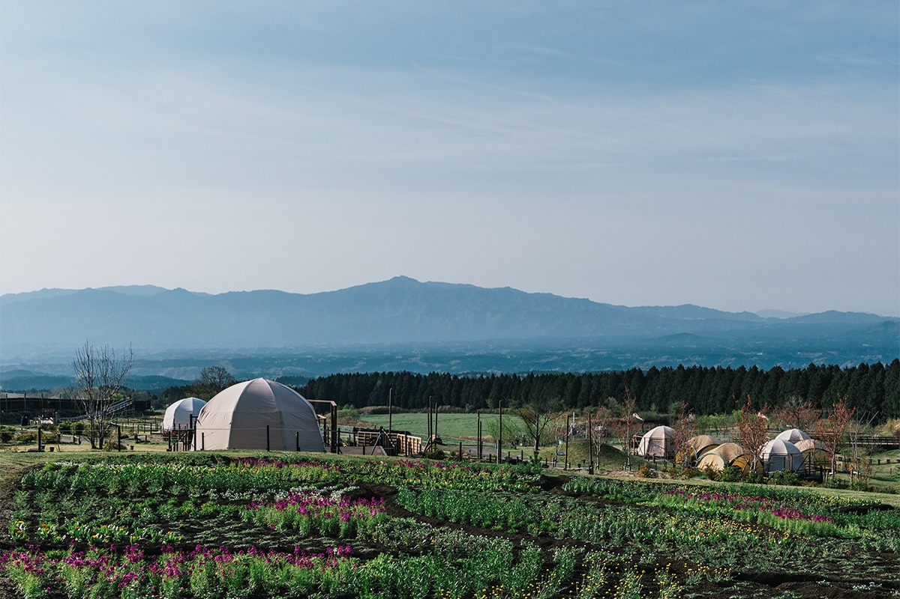
Плато Кудзю лежит почти в самом центре Кюсю, в окружении гор Кудзю и соседних хребтов. В сентябре 2020 года здесь, среди лугов, открылся открытый театр «TAO-но ока». Это база DRUM TAO, коллектива японских барабанов тайко, известного далеко за пределами страны, и выступления идут здесь почти каждый день. Сцена стоит так, что за спинами музыкантов видна панорама лугов и гор, и гул барабанов будто сливается с самим пейзажем.
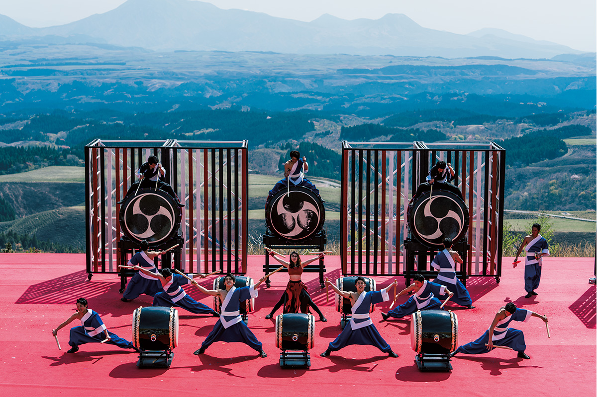
Билет на концерт для взрослых стоил 4500 иен в 2021 году. Представление идёт 45 минут.
Открытый театр «TAO-но ока»
- Адрес
- префектура Оита, Такэта, Кудзю-мати, Сирани, Итаги, 7571-2
- Телефон
- +81 974-76-0950
- Часы работы
- открытие зала 13:30, начало в 14:00; в июле и августе открытие 15:45, начало в 16:15. TAO HOUSE 11:00–17:00
- Выходные
- вторник и среда (если праздник, то на следующий день)
- Цены / Вход
- взрослый билет 4500 иен
- Сайт
- drum-tao.com
После концерта стоит поехать в цветочный парк Кудзю: за год здесь цветёт 500 видов растений, всего около пяти миллионов цветов. В углу этой цветочной деревни стоят купольные шатры кемпинга HANA to HOSHI. Гриль, посуда и продукты уже на месте, так что для барбекю ничего не нужно везти с собой. После ужина остаётся небо, усыпанное звёздами, и смотреть на него сколько угодно могут только те, кто здесь ночует.
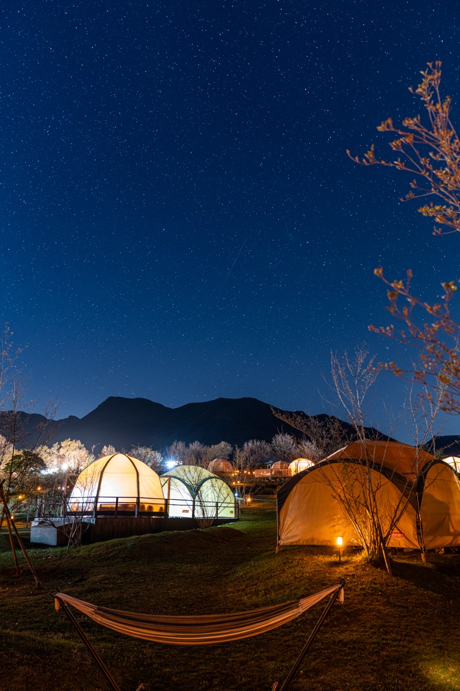
Утром рекомендуем встать пораньше и пройтись по парку. В каждом сезоне цветёт своё: в середине апреля флоксы, в начале лета лаванда, летом подсолнухи.
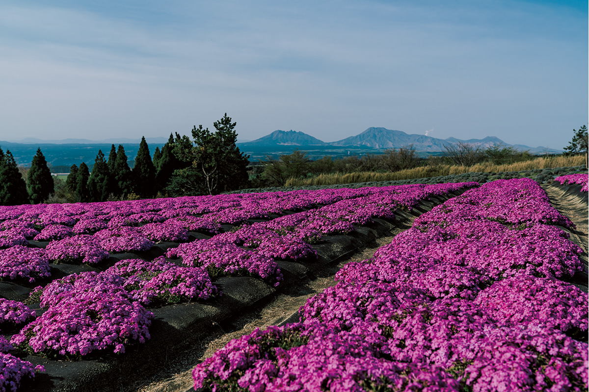
HANA to HOSHI
- Адрес
- префектура Оита, Такэта, Кудзю-мати, Кудзю, 4050
- Телефон
- +81 974-76-1467 (9:00–17:00)
- Номера
- 16 шатров
- Цены / Вход
- место в шатре с барбекю, ужином и завтраком от 16 555 иен на человека при размещении вдвоём
- Заезд / выезд
- 15:00 / 10:00
- Как добраться
- около 2 часов 30 минут на машине от аэропорта Оита
- Сайт
- hanatohoshi.com
KUJU WINERY: виноградники на высоте 850 м
По соседству работает винодельня KUJU WINERY. Её создатели хотели, чтобы в родных местах появился пейзаж с виноградниками: лозы посадили в 2002 году, а через четыре года выпустили первое вино. На высоте 850 м прохладно и много солнца, поэтому у вин гибкая, чистая кислотность, и оценки им с каждым годом всё выше. Особые надежды здесь связывают с собственным сортом «Кусифуру-но юмэ», гибридом мерло и японского горного винограда.
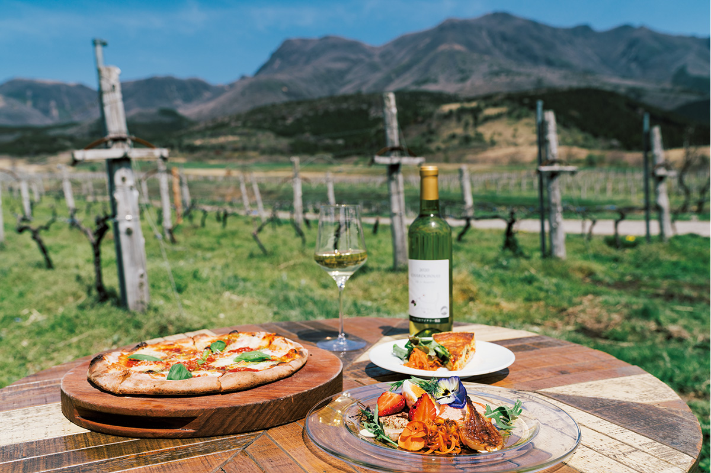
KUJU WINERY
- Адрес
- префектура Оита, Такэта, Кудзю-мати, Кудзю, Хираки, 3990-1
- Телефон
- +81 974-76-1002
- Часы работы
- магазин 10:00–18:00, ресторан 11:00–17:00 (зависит от сезона)
- Выходные
- без выходных
Беппу
Каннава: шатры с онсэном и пар над улицами
Из Кудзю дорога ведёт в Беппу. Онсэн Каннава входит в Беппу-хатто, восемь онсэн-районов города, и здесь до сих пор много старых гостиниц для тодзи, долгого лечения водами. В апреле 2021 года рядом открылся глэмпинг GRANXIA Beppu Kannawa. Большие купольные шатры с кондиционером и отоплением удобны, как гостиничный номер, и у каждого есть своя площадка для барбекю и свой онсэн.
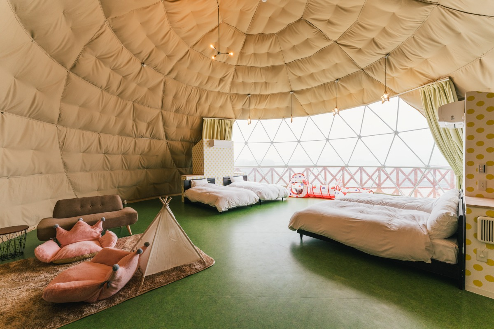
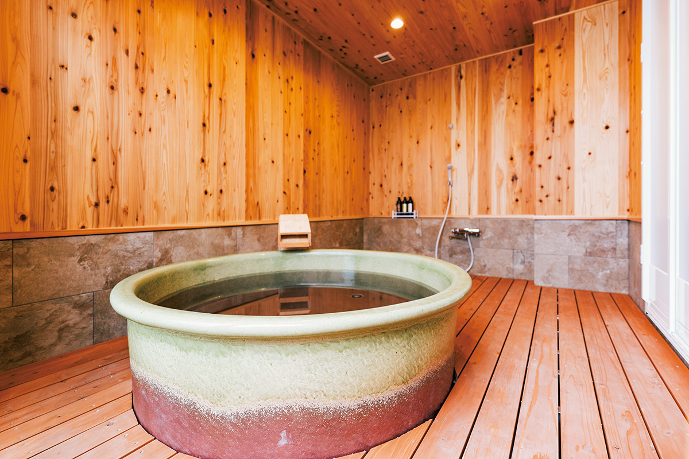
GRANXIA Beppu Kannawa
- Адрес
- префектура Оита, Беппу, Цуруми, Тэрию, 1409-1
- Телефон
- +81 120-197-455 (8:30–17:30, звонок бесплатный внутри Японии)
- Номера
- 16 шатров
- Цены / Вход
- шатёр 6 м от 15 180 иен на человека при размещении вчетвером, шатёр 10 м от 11 000 иен на человека при размещении вшестером
- Заезд / выезд
- 15:00 / 10:00
- Как добраться
- около 2 часов на машине от аэропорта Оита; от станции JR Беппу около 20 минут на автобусе до остановки Тэрию-сита и 20 минут пешком
Каннава хороша для того, чтобы задержаться на несколько дней. Пар здесь поднимается отовсюду, и сразу понятно, что ты в городе горячих источников.
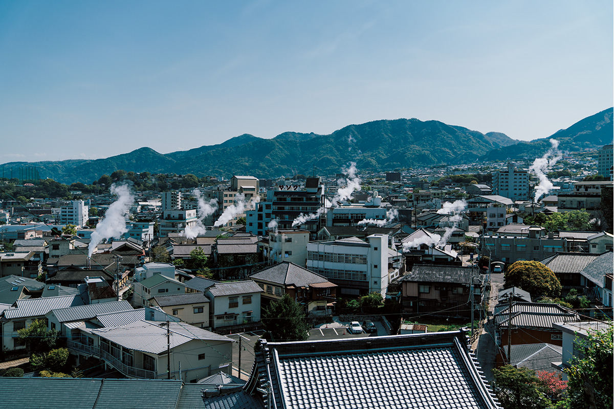
В бывшей гостинице, где сдавали комнаты для долгого постоя, теперь коворкинг a side «Масуя». От старого дома остались резные ранма, деревянные панели над раздвижными дверями. Здесь есть Wi-Fi, офисная техника и маркерная доска, можно приносить еду, если у неё нет сильного запаха. Гостям коворкинга бесплатен общественный онсэн «Судзи-ю» напротив, так что в перерыве можно сходить в горячую воду.
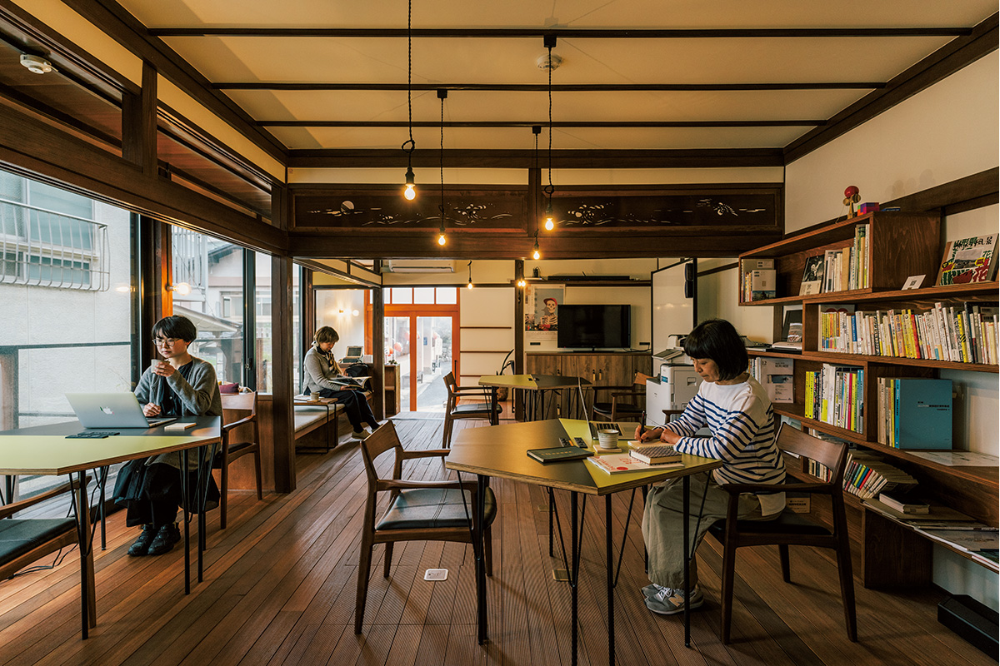
a side «Масуя»
- Адрес
- префектура Оита, Беппу, Ида, 4-куми, напротив онсэна «Судзи-ю»
- Телефон
- +81 977-76-5234
- Часы работы
- 11:00–19:00
- Выходные
- воскресенье
- Цены / Вход
- 500 иен за 2 часа, 1000 иен за день
- Сайт
- 1side.jp
Обедать можно в «Мусубино». Здесь готовят с опорой на местные приёмы: на пару низкой температуры, моют продукты водой около 50 °C.
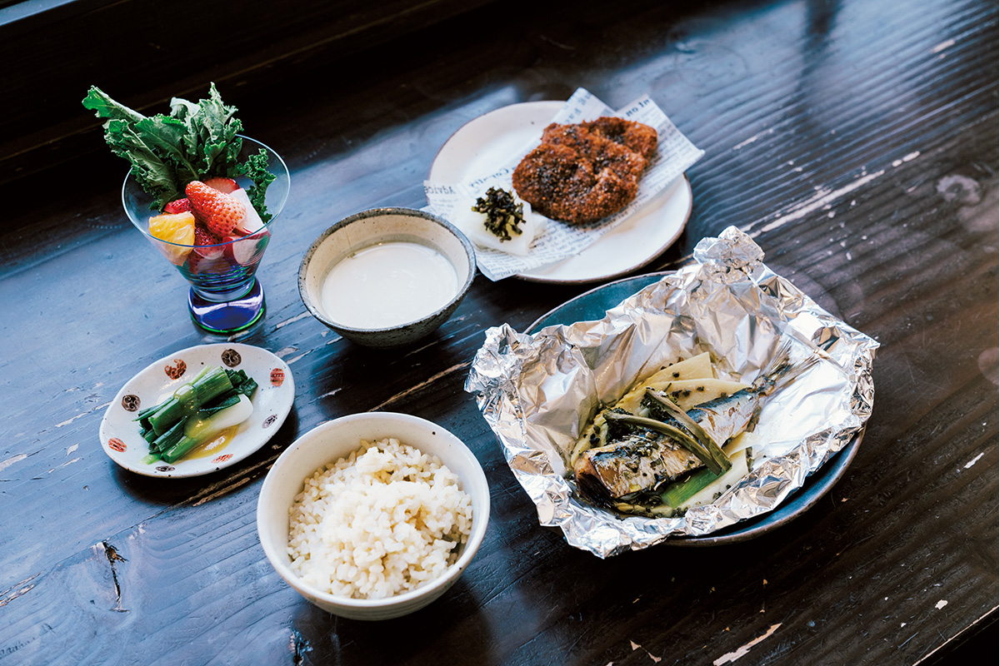
«Мусубино»
- Адрес
- префектура Оита, Беппу, Каннава-ками, 1-куми
- Телефон
- +81 977-66-0156
- Часы работы
- 11:30–18:00 (о завтраках узнавайте заранее)
- Выходные
- четверг, иногда пятница
- Сайт
- musubino.net
Фото: Ацуси Ямахира.